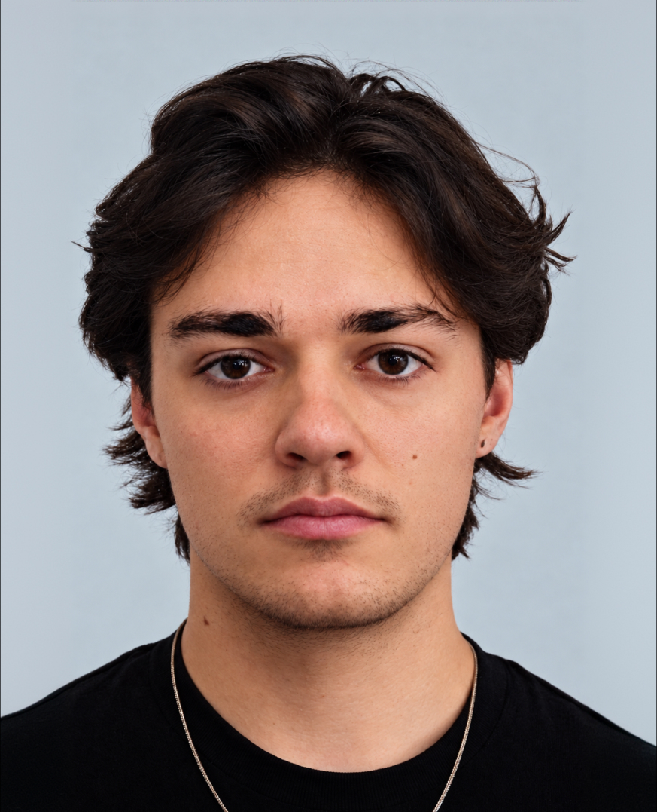

Design isnt what I do, its who I am.
I blend creativity with functionality to create work that’s visually compelling, culturally relevant, and built to resonate.
Im a visual designer at SixTwentySix, a production studio in Culver City, where I design director treatments, pitch decks and brand systems for national campaigns. Before that I was at Otis Design Lab, and I studied graphic design at Otis after political science and art history at the University of Alberta.
Originally from Alberta, Canada. Now LA.